сегмент: B2B enterprise SaaS
продукт: система управления задачами и командами
платформа: Desktop
Спроектировала систему управления задачами, командой и коммуникацией
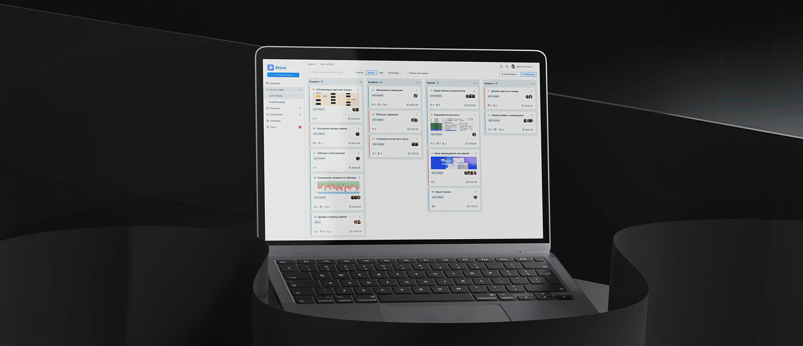
Контекст
Команды работали сразу в нескольких инструментах: задачи в одном сервисе, обсуждения в другом, информация о сотрудниках в разных местах. Из-за этого процесс распадался.
Задачи теряли связь с коммуникацией, загрузку команды отслеживали вручную, развитие сотрудников оставалось вне системы. В итоге работа требовала лишних усилий и выпадала из общего контекста.
Задача — собрать всё в одном продукте и выстроить понятный, связный процесс, в котором задачи, команда и коммуникация работают вместе.
Результаты
- задачи, команда и коммуникация объединены в одном интерфейсе
- ускорение обработки задач и коммуникации на ~25%
- сокращение времени на переключение между инструментами на ~30%
- повышение прозрачности процессов внутри команды
- развитие сотрудников встроено в рабочий процесс
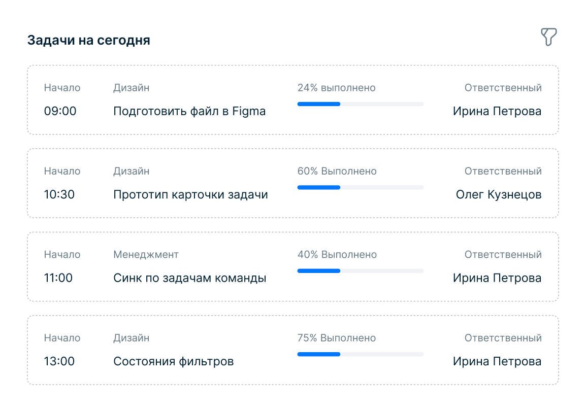
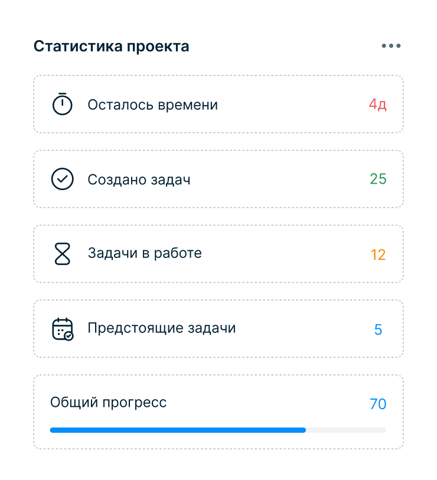
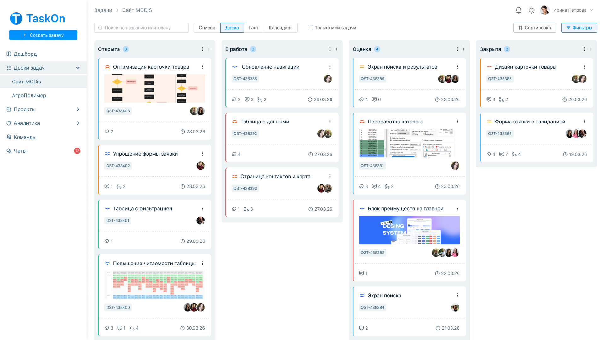
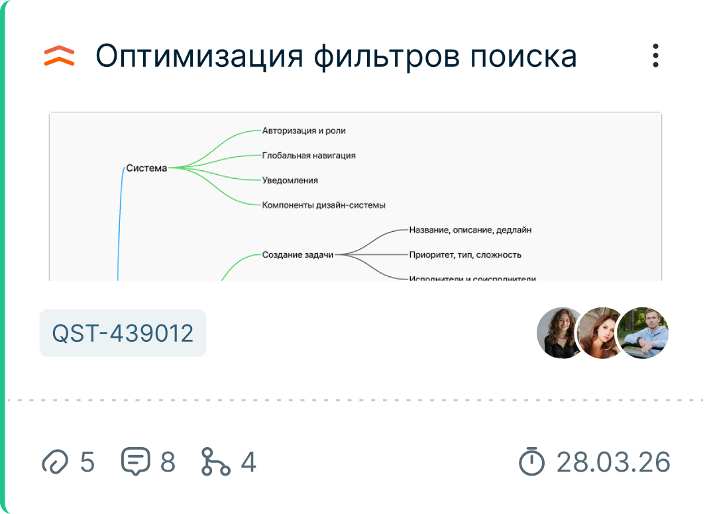
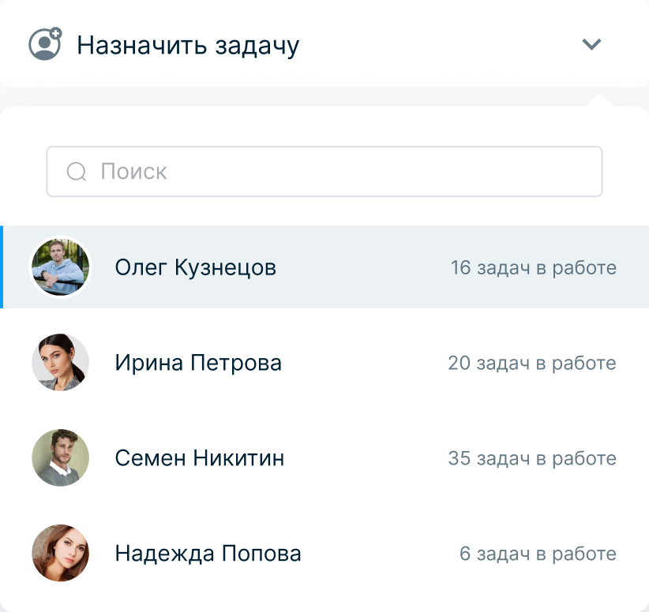
Моя роль
- формировала структуру системы
- прорабатывала сценарии
- участвовала в развитии продуктовой логики
- синхронизировала решения с командой
Исследование и подход
Чтобы собрать систему вокруг реальных процессов, я изучила, как команды работают с задачами и взаимодействуют между собой.
-
В работе использовала:
- интервью с участниками команд
- CJM текущего процесса
- проектирование архитектуры системы
- job stories для описания задач пользователей
- эвристический анализ интерфейсов
- гипотезы и их проверку
Это помогло собрать продукт, где задачи, коммуникация и команда связаны между собой.
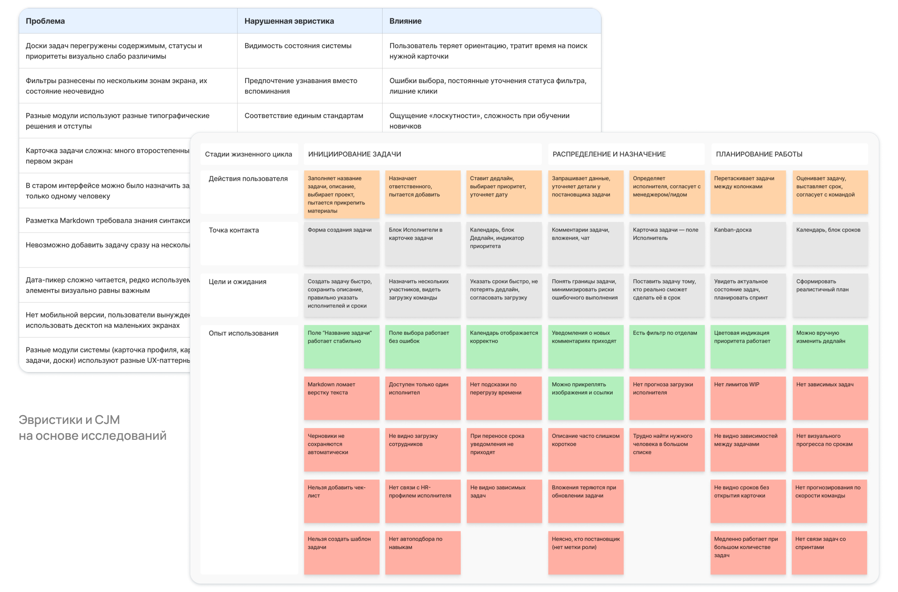
Управление задачами
- основной сценарий — работа с задачами на доске
- задачи распределены по этапам, карточки содержат ключевую информацию и участников
- команда видит статус работы и может быстро переключаться между задачами
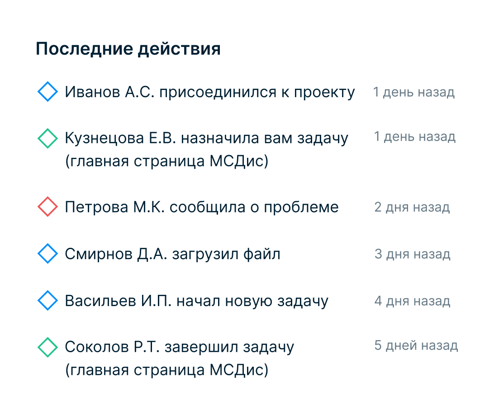
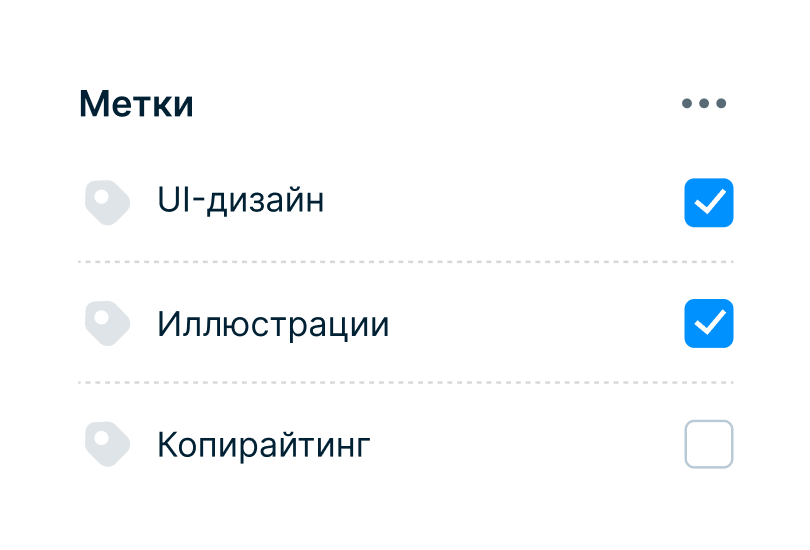
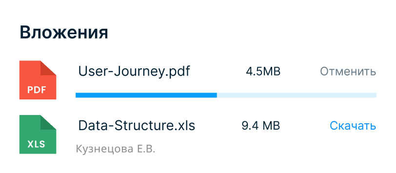
Аналитика
-
В систему добавлены инструменты для контроля и оценки работы команды:
- воронка задач
- динамика выполнения
- загрузка команды
Это даёт возможность отслеживать эффективность и принимать решения на основе данных.
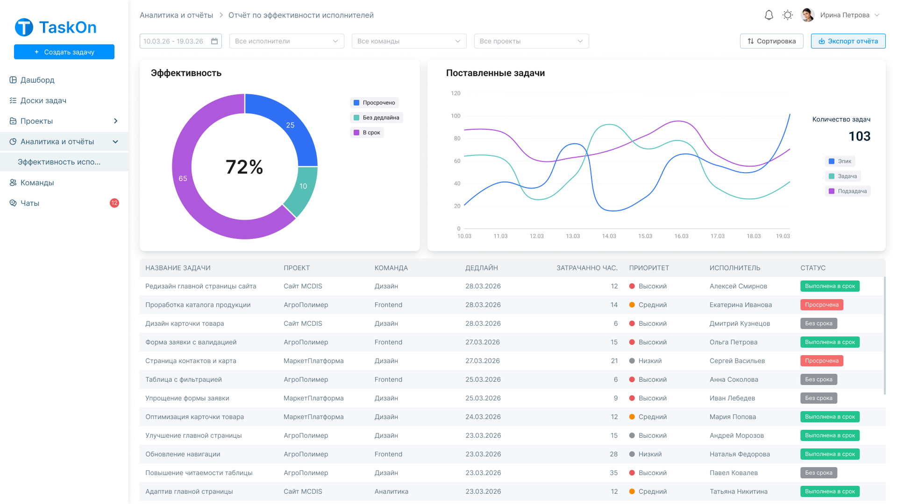
Работа с командой
В системе появился отдельный слой управления командой
-
Карточки сотрудников показывают:
- роли
- навыки
- участие в командах
Даёт понимание структуры команды и её развития.
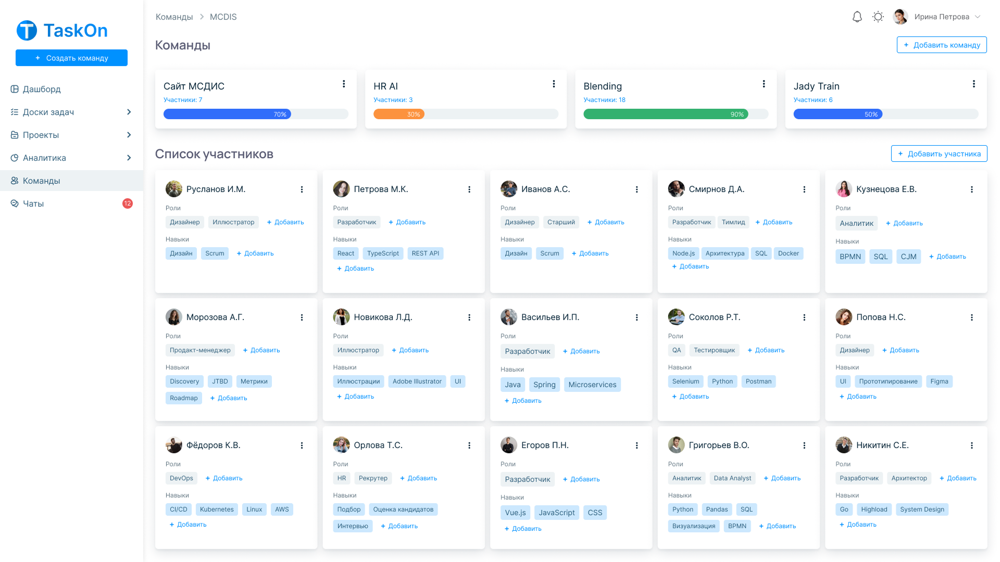
Результаты
- задачи, команда и коммуникация объединены в одном интерфейсе
- ускорение обработки задач и коммуникации на ~25%
- сокращение времени на переключение между инструментами на ~30%
- повышение прозрачности процессов внутри команды
- развитие сотрудников встроено в рабочий процесс
Инсайты проекта
Этот проект помог мне посмотреть на таск-трекер как на рабочую среду команды, а не просто доску задач. Скорость работы зависит от связности процессов: задач, обсуждений, данных о сотрудниках и загрузке.
Главный эффект дала общая логика системы. Когда команда работает в одном пространстве, контекст сохраняется, статусы видны, решения принимаются быстрее. Для таких продуктов важно проектировать устойчивую среду, которая помогает команде двигаться согласованно.